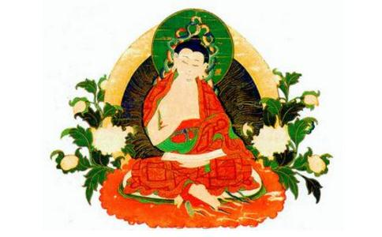

龙树是公元一世纪左右的人，他是
龙树在与各种思想的不断斗争中，弘扬和发展他的大乘中观理论，推动大乘佛教发展的。龙树的理论著作很多，有“千部论主”之称。由于他对佛教进行了系统化的整理工作，对后来影响很大，被称为“佛陀第二”。而且还被称为“八宗之祖”，佛教中有八个宗派都把龙树称为是自己的祖宗。下面就从这几个方面来对大乘佛教的创始人，
龙树，梵文是Nagarjuna,他的母亲在树下生他，因名周那（arjuna），周那是树的意思；他的师傅是大龙
龙树菩萨的出世在
《入楞伽经》第八卷中记载：大慧菩萨白佛言：“佛灭度后，是法何人受持？”佛以偈答曰：“于我灭度后，南
关于龙树菩萨的生平， 《
不久，龙树在大龙菩萨的引导下，来到龙宫，阅读诸方等大乘深奥经典，得无量妙法，三个月后，通解甚多，深入无生，二忍具足。这时龙树就已经达到决定的
龙树得道后，就回到南印度弘扬佛教，那里的国王排斥佛教，龙树就应征成为国王的将军，在很短时内就把军队治理得井井有条。国王大喜，就问他是什幺人，龙树说是“全知者”。龙树还用
又有婆罗门妒忌龙树，要求斗法，他以法术化了一个大池，自己坐到池中的莲华上，并斥责龙树。龙树化了一六牙白象，坐在其上，用象鼻把婆罗门抛在地下，使他折服。
关于龙树的死，有的说他为国王做长生药，太子想早点继承王位，就向龙树乞讨他的头，于是龙树就
龙树的著作很多，有“千部论主”之称。保留到现在，收集在《大藏经》中的就有19种。在藏文译本中，龙树的著作有一百一十八种之多，其中许多是关于密教的，而龙树著作的藏文译本与汉文译本重复的只有十一种。龙树有六种显教方面的著作很为人重视，被称为“六如理聚”，它们是：《中论》、《七十空性论》、《六十如理论》、《迥诤论》、《广破论》、《宝 论》（即《宝行王正论》，尼泊尔还藏有梵本，1934年，被西方人发现，印了出来。）龙树的藏文著作可分为三类，一类是赞颂，有18种，一类是密教解释，有51种，一类是显教解释及杂着，有48种。龙树的著作收集在大藏经中的约有19部，这些著作又可分为宗论部、释经部、集经部、颂赞部。
在龙树的主要著作中，人们比较熟悉的是《中论》、《十二门论》、《菩提资粮论》、《大智度论》、《十住毗婆沙论》等。其中《中论》中讲到了“八不缘起”、“ 无自性”、“二谛”、“实相涅”等思想；《十二门论》是从十二个方面对《中论》中所阐述的缘起性空思想进行解说，是对《中论》思想的进一步阐发。《菩提资粮论》是讲要达到对缘起性空，中道实相的认识，一定要积集福德资粮，否则就会落于事物性空的一面，而对事物缘起假名有的一面认识不够。《大智度论》是对《大般若经》和解释，所以《大智度论》又译为《摩诃般若释论》。
龙树的思想是杰出的，他的著作较多，对大乘佛教影响很大，所以后来也就有人把一些阐述佛教缘起性空论着说成是龙树菩萨所造，以增加论着的影响，甚至把一些阐述唯识思想的著作也说成是龙树所作，如
龙树在佛陀灭后七百年，非常准确地阐发了佛陀的缘起思想，使人们从新认识到佛教的最根本思想；而且他对佛陀的教法进行了系统化的整理工作，创立了中观学，在他的理论中他彻底地贯彻佛陀宣讲的缘起思想，对后来佛教的发展产生了很大影响，因而被称为“佛陀第二”。
中观是对事物的一种看法，这种看法不偏于对立法的任何一边，所以称为中观。所谓对立的两边，主要是关于事物的有和无。龙树认为事物是无自性的，是“空”；但事物是由从缘合和而成的，所以也就不是完全“空无”。说它是“空”，是否定其“真有”，说它是“假”，是否定其“真无”，能同时看到事物的这两种属性，就能得到事物的中道实相了。
龙树的思想主要体现在他的代表作《中论》中，《中论》一书的主要是讲“缘起”、“无自性”、“中道”、“二谛”、“涅般”等思想的。
一、《观
二、从缘起理论出发，龙树认为一切事物都是空的，没有自性。他说：“因缘中有性，是事则不然。” 因为事物如果有决定的自性，则一切生灭现象都无法存在，世界则会僵化、固定、静止不变。龙树在《观四谛品》中说：“若有决定性，世之种种相，则不生不灭，
佛教以缘起理论起点，推出万物都是空无自性的，又从反面说如果诸法不空，则有种种过咎，这样也就进一步说明缘起理论的正确性，因而在《中论》中他把缘起理论推得很高，说：“是故经中说，若见因缘法，则为能见佛，见苦集灭道。”
三、在缘起和性空的理论基础上龙树提出了中道思想。万法是缘起的，所以是空，但万物既然缘起了，就不是空无所有，就不是不存在，而是一种有，这种有没有自性，只是语言的方便设施，只是名言概念，所以称为是假名有。对于事物的空性和假名有，龙树在《中论》中说：“众因缘生法，我说即是空，亦为是假名，亦是中道义。” 在这里龙树兼顾假有与性空来说中道，认为只有同时看到事物的性空和假有两面，才是中道
四、二谛说 龙树在阐述他的中道思想时，认为要同时看到空和有，即不能偏于有或空，这也就是真空与俗有不二，就是佛教的二谛说。龙树对二谛思想很重视，他在《中观》观四谛品中说：“诸佛依二谛，为众生说法，一以世俗谛，二第一义谛。若人不能知，分别于二谛，收于深佛法，不知真实义。若不依俗谛，不得第一义谛，不得第一义，则不得涅 ”
俗谛，是说因缘生法是有，不是无或不存在，由于众生对于因缘生法的执着，诸佛就即因缘生法而开方便门，认为诸法是假有，只是分别出来的幻相，但它们也是不相错乱的。
第一义谛，是指因缘生法没有自性，当体即空，也就是诸法实相。它是离言说议论的，是不可言说的。《观法品》中讲：“诸法实相者，心行言语断，无生亦无灭，寂灭如涅 ”
真谛与俗谛只是佛陀引导众生的方便，事实上只有一个真谛存在，这就是所谓
五、涅般，涅般是寂灭的意思，也就是诸法的本性。般若学从缘起法讲，一切都不是决定的生灭，所以一切法的生灭与一切法的不生灭（即寂灭），并不排斥，而且从本质上说就是同一的。依缘起法则，一切法因缘合和而成，是没有自性的，它的生灭就如同幻化的一般，只是人的第七
龙树所宣讲的“空”的思想，对佛教的发展产生了大的影响；而西方哲学界对他的思想也给了很高的评价，德国存在主义哲学大师卡尔‧雅斯贝斯在1757年着的《大哲学家》第一卷中，列举了15位世界“伟大的哲学家”，其中就有佛陀和龙树。
四、八宗之祖 龙树由于他思想的价值，对后来的佛教发展影响很大，被称为佛教“八宗之祖”，佛教中的俱舍宗、成实宗、律宗、三论宗、
三论宗以龙树的《中论》、《十二门论》、《大智度论》和龙树的
因龙树作了《十住毗婆沙论》，对《华严经》的《十住品》有注释，所以华严宗人向印度方面寻师承，也就把龙树看成是自己的祖先了。而且龙树曾深入龙宫诵读《华严经》，从中悟入无生法忍，并使它流传于世，因此华严宗就把他看是自己的祖宗了。
法相宗是源于印度的瑜珈行派，而瑜珈行派是推崇龙树的中观思想的。瑜珈行派与后期的中观学之间有着很深的分歧，但瑜珈行派的学者并不否认龙树的思想和成就，他们只是认为龙树的后继者在论说空时有执着于空的倾向，的恶取空的倾向，认为这种思想倾向对佛教的发展很不利，所以就从万法惟识的角度讲关于宇宙万有的种种认识。他们也认为自己的思想是源于龙树的般若思想的，他们认为其重要理论三性思想（遍计所执性、依他起性、圆成实性），是从龙树的二谛理论发展而来的，是龙树思想二谛思想的必然结果。他们又认为瑜珈就是般若，是得到大菩提的最胜方便，两者是统一的。由于瑜珈行派与龙树思想之间的渊源关系，所以从瑜珈行派发展而的法相宗也就自然尊龙树为祖宗了。
龙树作的《十住毗婆沙论》中有《易行品》一章，说
据说龙树曾开铁塔，向金刚萨埵菩萨（显教里称为
在南朝，律宗大师僧把龙树列为律宗的第三十四代宗师。僧 在他的《萨婆多部记》中说：“大圣迁辉，岁纪绵邈，法僧不堕，其唯律乎！初集律藏，一轨共学，中代异执，五部各分。既分五部，则随师传习，唯萨婆多部遍行齐土。” 这就是说律藏本来是大迦叶和阿难结集出来的，接下来分为五支，而只有萨婆多部，即说一切有部的律法传入中土。而龙树据说是在说一切有部出家的，，与大众部的僧人多有接触，，这样僧也就把龙树说为是律宗的祖宗之一了，把他列为第三十四代，把提婆列为第三十五代。
小乘俱舍宗和成实宗也都把龙树视为自己的祖宗，这也是有原因的。俱舍宗是以世亲的《俱舍论》为理论依据建立起来的，它讲的五位七十法与法相宗讲的五位百法是很相近的，因此在大乘佛教兴起后，它就附属于法相宗了，而法相宗与龙树菩萨的思想是有一定关系的，是把龙树视为祖宗的，所以俱舍宗自然也会把龙树视为自己宗派的祖宗了。成实宗是以《成实论》为理论依据建立起来的，它是鸠摩罗什翻译到中国来的，成实宗思想与大乘佛教的思想有着相近的地方，当时人们都认为它是大乘经典，后来吉藏等人把它判为小乘。成实宗与三论宗在发展过程中曾有过辩论，成实学者不敌三论学者，最后成实宗也就附属于三论宗而传播；而三论宗思想是直接从龙树传下来的，与龙树有着大的渊源，由此成实宗也就自然会以龙树为自己的祖宗了。
龙树菩萨的一生是非常充实和